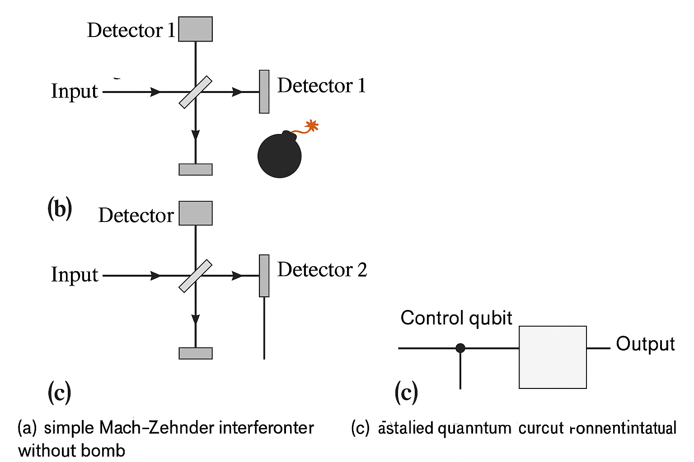
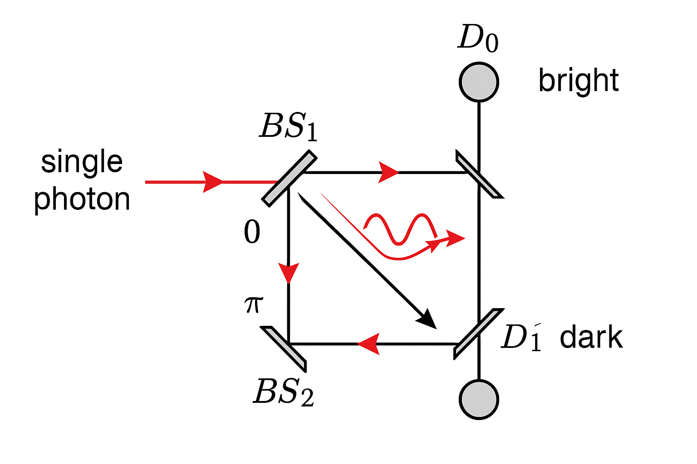
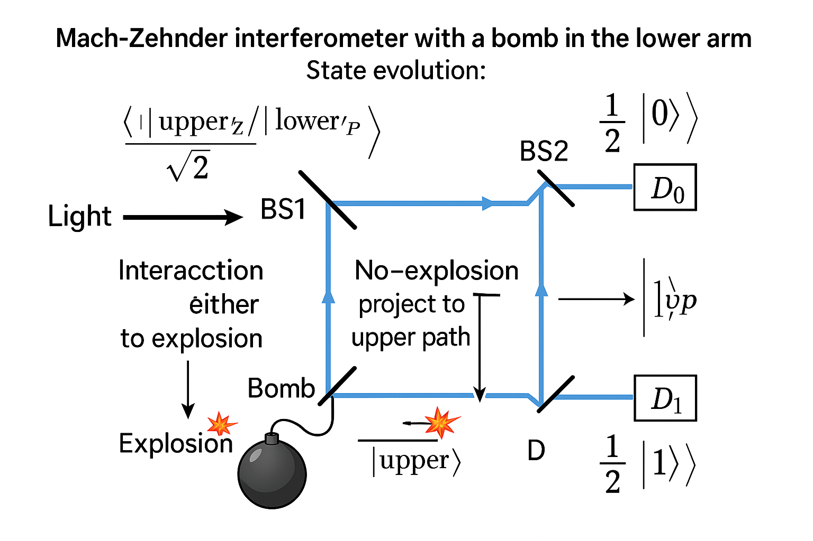
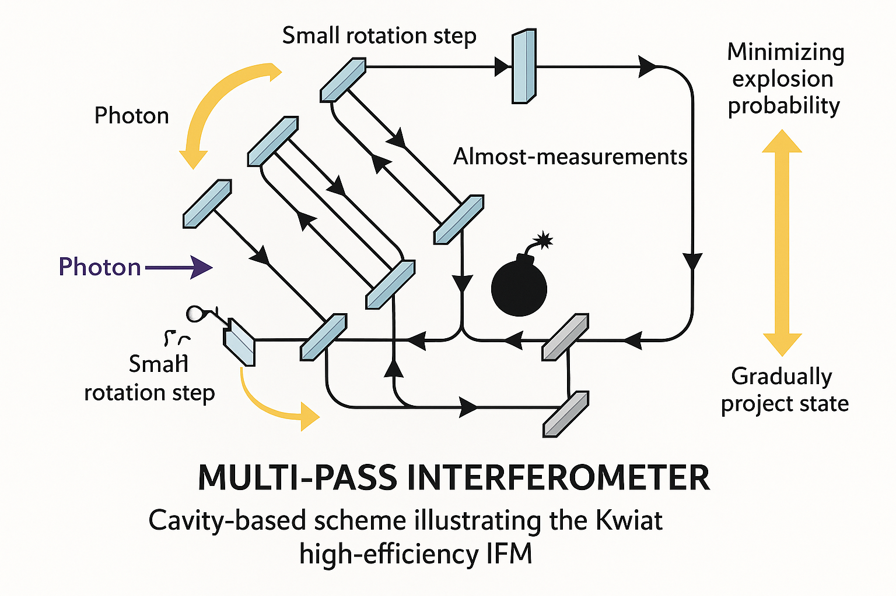
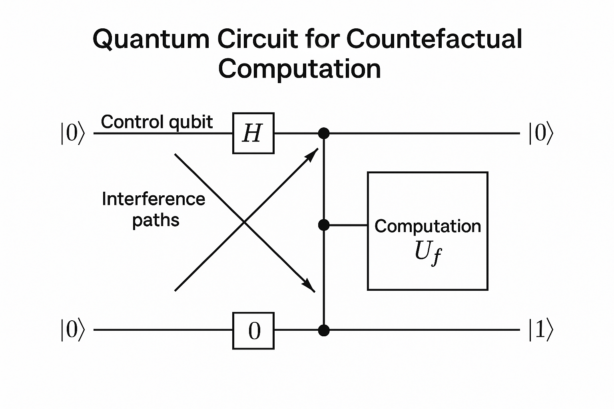
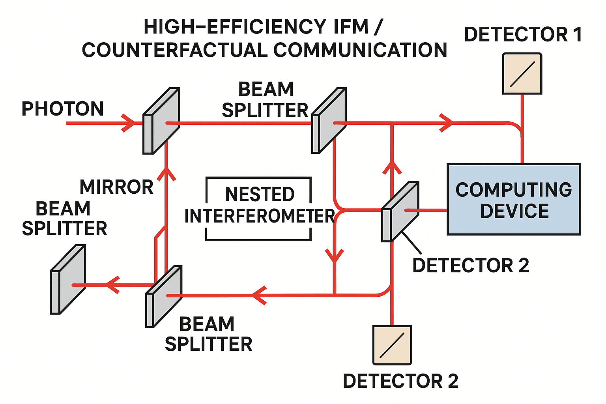

第 8 講：Decoherence 主題 8 —— Interaction-free Measurements 與 Counterfactual Quantum Computation
本講聚焦於一個看似悖論、但在退相干與測量理論中地位極其關鍵的主題：無交互測量（Interaction-free measurement, IFM） 與 反事實量子計算（Counterfactual quantum computation）。這些現象看似允許「在沒有發生實際交互」的情況下獲知系統資訊，表面上似乎違背了量子測量與退相干的基本機制，但仔細分析後會發現，它們嚴格遵守測量–擾動與資訊–退相干的基本限制。
本講的目標：
- 從退相干與測量理論的角度，精確描述所謂「無交互」的真正含義。
- 用路徑干涉與投影測量的形式化，分析 Elitzur–Vaidman 炸彈測試與 Kwiat 強化版。
- 說明為何 IFM 並不違反 Information-gain–disturbance tradeoff，而是以「路徑選擇 + 退相干」的方式實現。
- 延伸到反事實量子計算，說明其與量子 Zeno 效應、受控演化與退相干之間的關聯。

圖 8-4: A conceptual diagram with three panels: (a) simple Mach-Zehnder interferometer without bomb, showing interference at detectors; (b) Mach-Zehnder with a bomb inserted in one arm, illustrating disruption of interference; (c) a stylized quantum circuit representing counterfactual computation with a control qubit and a computation box.
Prompt: A conceptual diagram with three panels: (a) simple Mach-Zehnder interferometer without bomb, showing interference at detectors; (b) Mach-Zehnder with a bomb inserted in one arm, illustrating disruption of interference; (c) a stylized quantum circuit representing counterfactual computation with a control qubit and a computation box.
8.1 什麼是「無交互測量」？從退相干的語言看
8.1.1 直覺圖像：炸彈測試的基本敘事
所謂「無交互測量」最常見的敘事是：
- 你有一批極其敏感的炸彈，只要有一顆光子撞上去，炸彈就會爆炸。
- 你想知道炸彈是否「良品」：也就是是否真的有一個會爆炸的吸收裝置，而不是假的（實際上不會引發爆炸）。
- 你不想靠「撞上去看看會不會爆」來測試，而希望在不引爆炸彈的情況下，測出「這是一顆好炸彈」。
Elitzur–Vaidman (EV) 的巧思是：利用 Mach–Zehnder 干涉儀，在某些情況下，單一光子的偵測結果就足以告訴你「那裡有一顆會爆炸的炸彈」，而且實際上並未觸發爆炸。這被稱為 interaction-free measurement（無交互測量）。
然而，「無交互」在量子退相干的語境下，不能被天真地理解為「沒有任何量子層面的交互」。實際上：
- 炸彈存在或不存在，會改變光子可能路徑的 可行性（availability） 與 相干性（coherence）。
- 這改變了光子路徑的 干涉結構，等價於與環境（炸彈）發生了「哪條路」資訊的 潛在耦合。
- 退相干觀點：即便沒有實際發生吸收事件，存在吸收的可能性 本身已對路徑的相干性產生影響。
因此，我們要用 密度矩陣、投影測量與退相干 的形式化語言，重寫 EV 方案，並分析其中的「無交互」到底意味著什麼。
8.2 Mach–Zehnder 干涉儀：無炸彈時的基準案例
8.2.1 光子路徑的兩能級系統描述
考慮一個理想的 Mach–Zehnder 干涉儀。我們用兩個正交路徑狀態來描述光子：
\[
\{|u\rangle, |l\rangle\}
\]
- \(|u\rangle\)：上路徑 (upper arm)
- \(|l\rangle\)：下路徑 (lower arm)
第一個 50:50 beam splitter (BS1) 將入射的單光子 \(|\text{in}\rangle\) 轉換為：
\[
|\text{in}\rangle \xrightarrow{\text{BS1}} \frac{1}{\sqrt{2}}\bigl(|u\rangle + i |l\rangle\bigr)
\]
這裡假設標準的 50:50 分束器相位約定：反射獲得 \(i\) 相位，透射不改變相位。具體哪一個是反射／透射可以重新定義，但我們採用一組固定約定即可。
兩條路徑之後，會在第二個 beam splitter (BS2) 重新匯合，接在兩個輸出端有兩個光子探測器 \(D_0, D_1\)。令：
- \(|D_0\rangle\)：探測器 \(D_0\) 方向輸出模式
- \(|D_1\rangle\)：探測器 \(D_1\) 方向輸出模式
第二個分束器對 \(|u\rangle, |l\rangle\) 的作用可寫為（同樣取某一組相位約定）：
\[
\begin{aligned}
|u\rangle &\xrightarrow{\text{BS2}} \frac{1}{\sqrt{2}}\bigl(i|D_0\rangle + |D_1\rangle\bigr),\\
|l\rangle &\xrightarrow{\text{BS2}} \frac{1}{\sqrt{2}}\bigl(|D_0\rangle + i|D_1\rangle\bigr).
\end{aligned}
\]
此時，若兩條路徑的光程差為零（或等效相位差為 0），則：
\[
\begin{aligned}
|\psi_{\text{before BS2}}\rangle &= \frac{1}{\sqrt{2}}\bigl(|u\rangle + i |l\rangle\bigr),\\
|\psi_{\text{out}}\rangle &= \frac{1}{\sqrt{2}}\Bigl[
\frac{1}{\sqrt{2}}\bigl(i|D_0\rangle + |D_1\rangle\bigr)
+ i \frac{1}{\sqrt{2}}\bigl(|D_0\rangle + i|D_1\rangle\bigr)
\Bigr] \\
&= \frac{1}{2}\Bigl[
i|D_0\rangle + |D_1\rangle + i|D_0\rangle - |D_1\rangle
\Bigr] \\
&= i |D_0\rangle.
\end{aligned}
\]
因此：
- 若沒有炸彈（或任何導致退相干的裝置）存在於路徑中，光子永遠只會在 \(D_0\) 被偵測到，在 \(D_1\) 的偵測機率為 0。
- 這是標準的 完全相干干涉 案例。

圖 8-1: Mach-Zehnder interferometer without any object in the arms. A single photon from the left enters BS1, splits into upper and lower paths, recombines at BS2, and all probability flows to detector D0, with D1 dark. Use arrows and phase labels to show interference.
Prompt: Mach-Zehnder interferometer without any object in the arms. A single photon from the left enters BS1, splits into upper and lower paths, recombines at BS2, and all probability flows to detector D0, with D1 dark. Use arrows and phase labels to show interference.
8.2.2 密度矩陣與退相干視角
以密度矩陣描述，在 BS1 之後：
\[
\rho_{\text{photon}} = |\psi\rangle\langle\psi| = \frac{1}{2}\bigl(
|u\rangle\langle u| + |l\rangle\langle l| + i|u\rangle\langle l| - i |l\rangle\langle u|
\bigr).
\]
對角項 \(|u\rangle\langle u|, |l\rangle\langle l|\) 表示路徑佔據機率各 \(1/2\)，而非對角項 \(i|u\rangle\langle l|-i|l\rangle\langle u|\) 正是干涉所需的 相干項（coherences）。若這兩個非對角元素因與環境交互而被抑制（趨近於 0），則在 BS2 的輸出將不再是完全干涉，而變為機率疊加，進而產生在 \(D_1\) 的非零偵測機率。
這為後續的「炸彈存在」案例鋪路：炸彈或測量裝置的存在，會讓某些路徑與環境產生糾纏或吸收機率，從而改變相干結構。
8.3 Elitzur–Vaidman 炸彈測試：形式化與退相干分析
8.3.1 模型化炸彈：路徑–炸彈系統的聯合 Hilbert 空間
將炸彈視為兩態系統：
- \(|B_\text{ready}\rangle\)：炸彈完好、未爆狀態
- \(|B_\text{exploded}\rangle\)：炸彈已爆狀態
只要有光子沿著下路徑 \(|l\rangle\) 經過並與炸彈發生吸收交互，我們模型化為：
\[
|l\rangle \otimes |B_\text{ready}\rangle \xrightarrow{\text{interaction}} |0\rangle \otimes |B_\text{exploded}\rangle,
\]
其中 \(|0\rangle\) 表示「沒有光子」的模式；即光子被完全吸收並引起爆炸。
而若光子經走上路徑 \(|u\rangle\)，則不與炸彈交互：
\[
|u\rangle \otimes |B_\text{ready}\rangle \xrightarrow{\text{no interaction}} |u\rangle \otimes |B_\text{ready}\rangle.
\]
將入射光子狀態視為 \(|\psi_\text{in}\rangle = |\text{in}\rangle \otimes |B_\text{ready}\rangle\)。經 BS1 後：
\[
|\Psi_1\rangle = \frac{1}{\sqrt{2}}\bigl(|u\rangle + i|l\rangle\bigr)\otimes |B_\text{ready}\rangle.
\]
接著光子可能走上、可能走下。與炸彈的交互在 Hilbert 空間中是：
\[
\begin{aligned}
|\Psi_2\rangle &= \frac{1}{\sqrt{2}}\bigl(
|u\rangle\otimes |B_\text{ready}\rangle
+ i\,|l\rangle\otimes |B_\text{ready}\rangle
\bigr) \\
&\xrightarrow{\text{interaction}} \frac{1}{\sqrt{2}}\bigl(
|u\rangle\otimes |B_\text{ready}\rangle
+ i\,|0\rangle\otimes |B_\text{exploded}\rangle
\bigr).
\end{aligned}
\]
觀察到：原本兩條路徑 \(|u\rangle, |l\rangle\) 的相干疊加，現在變成了「上路徑 + 無光子狀態」，而兩者關聯著不同的炸彈狀態。這代表：
- 路徑自由度與炸彈自由度已經產生糾纏。
- 若我們只看光子子系統，必須對炸彈態跡化，將導致光子密度矩陣的退相干。
8.3.2 條件化在「沒有爆炸」事件下的演化
實驗上，我們關心的是那些「炸彈沒有爆炸」的事件。這對應於投影到 \(|B_\text{ready}\rangle\) 子空間，並捨棄 \(|B_\text{exploded}\rangle\) 的分量。形式上，條件化狀態：
\[
|\Psi_2^\text{(no-expl)}\rangle
= \frac{1}{\sqrt{p_\text{no-expl}}}
\Bigl[(\mathbb{I}\otimes |B_\text{ready}\rangle\langle B_\text{ready}|)\,|\Psi_2\rangle\Bigr]
= |u\rangle \otimes |B_\text{ready}\rangle,
\]
其中
\[
p_\text{no-expl} = \frac{1}{2}
\]
是「在這一輪實驗中炸彈沒有爆炸」的機率——這是因為光子走上路徑 \(|u\rangle\) 的機率為 \(1/2\)，走下路徑則必爆。
所以，在 條件化於「沒有爆炸」 的樣本中，光子狀態在經過炸彈區後被投影到純態 \(|u\rangle\)。這就是：光子完全喪失了走下路徑的分量。換言之：
- 原本的「兩路徑疊加」被「有炸彈存在並可能吸收」的測量行為所 摧毀。
- 已經發生一次「路徑哪條」的 強測量，只是我們條件化在沒有發生吸收事件的子集。
這裡實際上就是標準的 投影測量 + 退相干 的機制，只不過我們只保留某一測量結果的子集。
8.3.3 第二個分束器後的探測機率
在「沒有爆炸」條件下，光子在 BS2 之前的狀態是：
\[
|\psi_{\text{before BS2}}\rangle = |u\rangle.
\]
經 BS2：
\[
|u\rangle \xrightarrow{\text{BS2}} \frac{1}{\sqrt{2}}\bigl(i|D_0\rangle + |D_1\rangle\bigr).
\]
因此條件機率：
\[
\begin{aligned}
P(D_0 \mid \text{no-expl}) &= \frac{1}{2},\\
P(D_1 \mid \text{no-expl}) &= \frac{1}{2}.
\end{aligned}
\]
若反過來看「無條件機率」（即不條件化於是否爆炸）：
- 炸彈爆炸機率：\(P_\text{expl} = 1/2\).
- 在「不爆炸」事件中，有 \(1/2\) 機率得到 \(D_0\)，\(1/2\) 機率得到 \(D_1\)。
所以總體機率：
\[
\begin{aligned}
P(D_0) &= P(\text{no-expl}) P(D_0\mid\text{no-expl})
= \frac{1}{2}\cdot\frac{1}{2} = \frac{1}{4},\\
P(D_1) &= \frac{1}{2}\cdot\frac{1}{2} = \frac{1}{4}.
\end{aligned}
\]
加總檢查：
\[
P_\text{expl} + P(D_0) + P(D_1) = \frac{1}{2} + \frac{1}{4} + \frac{1}{4} = 1.
\]

圖 8-5: Mach-Zehnder interferometer with a bomb in the lower arm. Show state evolution: after BS1, superposition of upper and lower paths; interaction with bomb leads either to explosion if lower path is taken, or no-explosion with state projected to upper path. Then BS2 mixes the upper path to D0 and D1 with 50/50 probabilities.
Prompt: Mach-Zehnder interferometer with a bomb in the lower arm. Show state evolution: after BS1, superposition of upper and lower paths; interaction with bomb leads either to explosion if lower path is taken, or no-explosion with state projected to upper path. Then BS2 mixes the upper path to D0 and D1 with 50/50 probabilities.
8.3.4 為何 \(D_1\) 點亮代表「有良品炸彈且未爆」？
關鍵邏輯如下：
- 若無炸彈或有「假炸彈」不吸收光子，系統仍是完全相干干涉，光子永遠只會在 \(D_0\) 出現。
- 因此，任何一次光子在 \(D_1\) 被偵測，必定意味著「干涉被破壞」。
- 在此實驗設計裡，「干涉被破壞」唯一可行的原因是：有一顆會吸收光子的良品炸彈佈置在路徑中（或等價的可吸收元件）。
- 若這顆炸彈真的存在，但我們卻偵測到 \(D_1\) 而炸彈仍未爆炸，說明：光子本來的路徑疊加因「炸彈的存在及其吸收可能性」而被改變，同時這一次具體的量子歷史分支是「光子未真正撞到炸彈」，卻讓我們得知「炸彈是良品」。
換句話說，「無交互」是指：在這特定歷史分支中，不存在實際的能量交換事件（光子吸收）；但在路徑空間與環境 Hilbert 空間的角度，吸收可能性本身就足以改變相干結構。退相干／測量理論的角度會說：
- 存在著一個「潛在測量通道」，可將 \(|l\rangle\) 分支僅在 1/2 的實驗中變成爆炸分支。
- 對於沒爆炸的實驗子集，其路徑分布已被非單位投影改變。
- 因此，整體的量子過程並非真正「沒有交互」；是條件化後的歷史路徑顯示「本次 run 無局域能量交換」，但其機率結構來自整體可爆的交互通道。
8.4 Information-gain–disturbance tradeoff 與 IFM
8.4.1 測量–擾動基本關係的回顧
量子測量的一個基本原則是：取得關於一個不對易可觀測量的資訊，必然伴隨對系統狀態的擾動。這通常可形式化為資訊–擾動的 tradeoff，例如：
- 用 mutual information \(I\) 來量化測量結果與被測量可觀測之間的相關性。
- 用狀態改變的 trace distance、fidelity 或相干度下降來衡量擾動。
例如，對純態 \(|\psi\rangle\) 做一個 POVM 測量 \(k\)，也就是一整族的 \(M_k\)。-->\(\{M_k\}\)，輸出機率 \(p_k = \langle\psi|M_k^\dagger M_k|\psi\rangle\)，後測量狀態（條件於結果 \(k\)）：
\[
|\psi_k\rangle = \frac{M_k|\psi\rangle}{\sqrt{p_k}}.
\]
擾動可用 \(1 - |\langle\psi|\psi_k\rangle|^2\) 等指標量化。通則是：越多資訊（越可區分不同 \(|\psi\rangle\)），擾動越大。
8.4.2 為何 IFM 並不違反 tradeoff？
表面看起來，EV 方案好像「在沒有光子撞到炸彈」的情況下，就知道炸彈是否為良品，似乎是「零擾動下取得資訊」。但從更完整的實驗集合來看：
- 許多 run 中，光子實際上撞上炸彈而引發爆炸——這是強烈的擾動。
- 即便在「未爆炸」的子集中，光子的路徑態也被投影到單一路徑 \(|u\rangle\)，不再維持原本的疊加——這是對量子態的明顯擾動（干涉結構被摧毀）。
- 我們從 \(|D_1\rangle\) 的偵測事件中得到「炸彈良品」的資訊，代價是：
- 整體實驗中累積的爆炸事件（大量擾動）。
- 在該 run 中對光子原態的投影擾動。
若嘗試用信息論的方式來量化：
- 假設每顆炸彈有 50% 機率是良品，50% 是假貨。
- IFM 程序給出隨機變數 \(X\)（爆炸、\(D_0\)、\(D_1\)），從中可以得到關於「良品？」的互信息 \(I(\text{good}; X)\)。
- 要達到某一互信息，必須接受一定量的「狀態擾動」或「爆炸風險」；這與傳統測量的 tradeoff 並無本質差異。
IFM 的特別之處在於：有一部分 run 可以在「本次局部無能量交換」的情況下，仍帶來對系統狀態的資訊。這是由於：
- 干涉結構被整體的「擊中炸彈的可能性」所改變，並體現在探測機率。
- 對於單一 run 的某些分支，實際上沒有局域交互，但其發生機率是建立在其他可能分支（有爆炸）的存在之上。
因此，IFM 不違反資訊–擾動 tradeoff，而是展示了一種 在多分支量子演化中，條件化某些分支後看似「無擾動獲得資訊」的現象；必須放回整體統計與退相干結構中才能正確理解。
8.5 Kwiat 等人的強化版：高效率無交互測量與量子 Zeno 效應
8.5.1 問題：EV 炸彈測試效率有限
在原始 EV 方案中，能在「未爆炸」前提下成功判定「這是良品炸彈」的機率只有 \(1/4\)（偵測到 \(D_1\) 的機率），而炸彈爆炸機率是 \(1/2\)。對很多應用來講太低效率。問題在於：
- 一次干涉的結構，只提供了有限的路徑訊息。
- 「測量是否有炸彈」與「爆炸風險」幾乎同量級。
Kwiat 等人的強化方案利用 量子 Zeno 效應 (Quantum Zeno effect) 重複地「微弱地詢問系統是否有炸彈」，將成功的「無爆炸而測出良品炸彈」機率提升到接近 1。

圖 8-6: A multi-pass interferometer or cavity-based scheme illustrating the Kwiat high-efficiency IFM: a photon undergoes many small rotation steps, each step has a path where a bomb could absorb, but repeated 'almost-measurements' via possible absorption gradually project the state while minimizing explosion probability.
Prompt: A multi-pass interferometer or cavity-based scheme illustrating the Kwiat high-efficiency IFM: a photon undergoes many small rotation steps, each step has a path where a bomb could absorb, but repeated 'almost-measurements' via possible absorption gradually project the state while minimizing explosion probability.
8.5.2 簡化模型：旋轉 + 可能吸收 + Zeno 投影
考慮一個兩能級系統，用 \(|0\rangle, |1\rangle\) 表示「光子在安全路徑」與「光子走過炸彈所在路徑」。我們準備初態 \(|\psi_0\rangle = |0\rangle\)，然後施加小角度旋轉：
\[
R(\theta) =
\begin{pmatrix}
\cos\theta & -\sin\theta\\
\sin\theta & \cos\theta
\end{pmatrix},
\]
使得：
\[
|\psi_1\rangle = R(\theta)|0\rangle
= \cos\theta\,|0\rangle + \sin\theta\,|1\rangle.
\]
若在 \(|1\rangle\) 通道放置炸彈，使之隨即做「爆炸 vs 未吸收」的投影，我們可以將「一次小步驟」建模為：
- 單位旋轉 \(R(\theta)\)。
- 測量「光子是否在 \(|1\rangle\)」：若為是，炸彈爆炸；否則，狀態投影到 \(|0\rangle\) 的子空間。
對於第一步，爆炸機率（光子被投影到 \(|1\rangle\)）為：
\[
p_{\text{expl},1} = |\sin\theta|^2 \approx \theta^2,\quad (\theta\ll1).
\]
而「未爆炸」的條件狀態則被投影回接近 \(|0\rangle\)。重複進行 \(N\) 次小旋轉，每次角度 \(\theta = \frac{\pi}{2N}\)，在沒有炸彈時整體演化為：
\[
\bigl(R(\theta)\bigr)^N = R(N\theta) = R(\pi/2),
\]
將 \(|0\rangle\) 完全轉到 \(|1\rangle\)；而若有炸彈存在，Zeno 效應會讓狀態「被鎖在」\(|0\rangle\) 附近，且爆炸機率可壓得極低。
8.5.3 爆炸機率與成功無交互測量效率的估算
假設每一步爆炸機率約為 \(\sin^2\theta \approx \theta^2\)，且彼此獨立（近似），則：
\[
P_\text{no-expl} \approx (1 - \theta^2)^N \approx \exp(-N\theta^2).
\]
令 \(\theta = \frac{\pi}{2N}\)，則：
\[
N\theta^2 = N\left(\frac{\pi}{2N}\right)^2 = \frac{\pi^2}{4N} \to 0 \quad \text{當 } N\to\infty.
\]
於是：
\[
P_\text{no-expl} \approx \exp\Bigl(-\frac{\pi^2}{4N}\Bigr) \xrightarrow[N\to\infty]{} 1.
\]
同時，在「無炸彈」情況下，系統仍然可演化到 \(|1\rangle\)，只要整體旋轉角 \(N\theta = \pi/2\)。但在「有炸彈」情況下，頻繁地「幾乎測量」是否在 \(|1\rangle\) 會透過 Zeno 效應把狀態鎖定在 \(|0\rangle\)，所以：
- 若最後偵測到狀態 \(|1\rangle\)，可以推論沒有炸彈。
- 若最後偵測到狀態仍近似 \(|0\rangle\)，且在整個過程中都沒有爆炸事件，則幾乎可以確信有炸彈存在。
這實現了：
- 炸彈爆炸機率可被壓到非常低 \(\to 0\)（擾動成本極小）。
- 但仍然可以幾乎確定地判斷「是否有炸彈」——資訊獲取接近完美。
然而，即便在這裡，擾動仍然存在於「整體量子演化」層面：
- 有炸彈時，頻繁的「測量」或「可能吸收」仍是改變系統演化的主因。
- 在密度矩陣語言中，這對應於連續的退相干過程，限制了狀態在 Hilbert 空間的軌跡。
8.6 反事實量子計算：在不「真正執行」計算的情況下得到結果？
8.6.1 基本構想與直覺敘事
反事實量子計算（Counterfactual quantum computation）構想：利用量子干涉與 IFM 機制，在很多 run 中幾乎沒有真正讓「計算機」運作，就能得知計算結果。在敘事中常說：「電腦沒有真正跑，但你已知結果」。
以抽象形式：
- 有一個量子計算機，其演化單位算符記為 \(U_f\)，輸入狀態 \(|\text{in}\rangle\)，輸出 \(|\text{out}\rangle = U_f|\text{in}\rangle\)，其中 \(|\text{out}\rangle\) 的某些可測量觀察量給出計算結果。
- 希望通過 IFM 類似的干涉結構，設計一個控制 qubit \(|c\rangle\)，使計算機的實際啟動概率很低，卻仍然能從控制 qubit 的最終測量結果中推斷計算結果。

圖 8-2: A quantum circuit for counterfactual computation: a control qubit in superposition, controlling the activation of a computation box U_f. Interference paths arranged so that when the box is not activated, the control qubit acquires phase conditional on the would-be output, enabling extraction of the result.
Prompt: A quantum circuit for counterfactual computation: a control qubit in superposition, controlling the activation of a computation box U_f. Interference paths arranged so that when the box is not activated, the control qubit acquires phase conditional on the would-be output, enabling extraction of the result.
8.6.2 簡化模型：受控演化 + Zeno 結構
考慮兩部分系統：
- 控制 qubit：\(|0\rangle_c, |1\rangle_c\)。
- 計算機寄存器：\(|\text{ready}\rangle, |f=0\rangle, |f=1\rangle, \dots\)。
我們希望實現一個受控操作：
\[
U_\text{ctrl} =
|0\rangle\langle 0|_c \otimes \mathbb{I}
+ |1\rangle\langle 1|_c \otimes U_f,
\]
並且設計干涉，使得：
- 如果計算結果為某個特定值（例如 \(f=0\)），則整體干涉結構讓控制 qubit 幾乎總是落在某個可識別態 \(|\phi_0\rangle_c\)，而且啟動 \(U_f\) 的實際 run 數目接近 0。
- 若結果為 \(f=1\)，則控制 qubit 幾乎總是落在另一可識別態 \(|\phi_1\rangle_c\)。
具體實現上，常透過類似於 Kwiat 多步 IFM 的思路：多次微小「片段」地嘗試啟動 \(U_f\)，配合 Zeno 效應與干涉結構，使得：
- 在某一結果分支（比如 \(f=0\)），計算機實際上幾乎從未被啟動；
- 但「若啟動會如何干涉」的潛在效應，已足夠改變控制 qubit 的演化，使得測量該 qubit 就能讀出 \(f\)。
8.6.3 退相干與 IFM 觀點下的解析
將計算機裝置視為環境或測量裝置的一部分，控制 qubit–計算機的聯合演化可寫成：
\[
|\Psi_0\rangle
= |0\rangle_c\otimes|\text{ready}\rangle
\quad \text{或更一般地}\quad
(\alpha|0\rangle_c+\beta|1\rangle_c)\otimes|\text{ready}\rangle.
\]
在多步 Zeno 架構中，多次施加「旋轉 + 受控 \(U_f\) + 可能測量」操作，每一步都會使控制 qubit 與計算機寄存器產生微弱的糾纏，然後再部分投影到某個子空間（例如「尚未真的啟動」）。在理想極限下：
- 若計算結果為 \(f=0\)，這些微弱糾纏在每一步都被「擦除」或「被投影到安全子空間」，使得計算機實際啟動次數趨近於 0。
- 然而，控制 qubit 的演化在 Hilbert 空間中卻累積了某個 global 或 relative phase，這個 phase 反映了「若真地啟動 \(U_f\) 會產生什麼後果」。
於是，反事實計算的關鍵其實仍然是：利用「可能發生的交互」來決定相干結構。計算機作為一個環境／測量通道，即便在「實際上幾乎不被觸發」的子樣本裡，仍然影響了控制 qubit 的可達態空間與干涉。
從退相干角度看，這些方案通常要非常小心：
- 若計算機啟動時會迅速將其內部狀態與大環境糾纏，則退相干會在非常多 run 中發生。
- 反事實計算要求整體系統在「未啟動」分支中保持良好相干，以便透過精細干涉讀出結果。
因此，「反事實」更多是一種對於特定歷史分支的命名，而非全局演化中完全沒有交互。信息–擾動 tradeoff 仍然適用：只是我們把許多可能發生的大擾動壓縮到極低頻率，使得在大量實驗 run 中，擾動平均成本可以被壓低。
8.7 形式化：IFM 與 Counterfactuality 的數學界定
8.7.1 Path amplitude 與「可能交互」的角色
從 path integral 或路徑疊加觀點，IFM 與反事實計算的共同特徵是：
- 存在一組路徑 \(\mathcal{P}_\text{int}\) 上，如果光子走這些路徑，將發生明顯交互（吸收、爆炸、啟動計算）。
- 而對於另一組路徑 \(\mathcal{P}_\text{no-int}\)，系統不會實際交互。
- 實驗設計利用干涉，使得最終某些探測事件僅可能來自 \(\mathcal{P}_\text{no-int}\)，但其發生機率依賴於 \(\mathcal{P}_\text{int}\) 的存在與否。
用符號寫，令：
\[
\mathcal{A}_\text{out} = \sum_{p\in \mathcal{P}_\text{no-int}} A_p + \sum_{p\in \mathcal{P}_\text{int}} A_p,
\]
其中 \(A_p\) 是每條路徑振幅。若一旦實際走到 \(\mathcal{P}_\text{int}\) 的 path，系統就被吸收（炸彈爆炸等），則對應於這些路徑的振幅僅在「未被吸收條件下」才可出現在條件狀態中。
某些輸出事件（比如 \(D_1\) 偵測、或某個控制 qubit 狀態）之所以成為「指示符」，是因為：
- 在 無交互裝置（無炸彈、無啟動計算機）的世界，這些事件的振幅全部抵消（干涉為 0）。
- 在 有交互裝置（炸彈或計算機存在）的世界，路徑結構改變，使得這些事件得到非零概率。
此時我們說：雖然在該 run 中實際沒有走上「發生交互」的路徑，但其「存在與可能性」改變了干涉圖樣，因此情報是從「可能的互動結構」中獲得的。
8.7.2 「反事實性」的一種操作性定義
在量子信息的語言中，對「反事實」的一種操作性（但非唯一）定義可以是：
在某個測量結果 \(m\) 對應的歷史分支中，系統的演化等價於一個完全不包含某個子演化 \(U_\text{int}\)（如計算機啟動）的量子通道；然而，結果 \(m\) 的機率分布在不同「有／無該子演化」的世界中有顯著差異。
形式上，可寫成：
- 若計算機無法被啟動（假設 \(U_\text{int}\equiv\mathbb{I}\)），測量結果分佈為 \(P_0(m)\)。
- 若計算機可以被啟動，但在分支 \(m\) 中實際上未被啟動，則該分支測到 \(m\) 的機率為 \(P_1(m)\)。
- 當 \(P_1(m)\neq P_0(m)\) 時，我們說結果 \(m\) 提供了關於「是否存在 \(U_\text{int}\)」的資訊，儘管在該歷史中實際沒有執行 \(U_\text{int}\)。
這樣的定義凸顯了：
- 反事實性是相對於「不同物理世界」（有／無交互裝置）的比較命題。
- 並非聲稱在全體 Hilbert 空間演化中沒有交互的可能性，而是說：在被選中的那個分支上，實際歷程中沒有局部能量交換或可觀測交互。
8.8 與退相干機制、測量理論的整體關聯
8.8.1 Bohm 的 Apparatus+System 圖式在 IFM 中的應用
回顧前幾講中 Bohm 類型的「測量裝置 + 系統」架構：系統 \(S\) 的可觀測量與裝置 \(A\) 的指針狀態之間存在單位糾纏演化：
\[
\Bigl(\sum_i c_i |s_i\rangle\Bigr)\otimes|A_0\rangle
\xrightarrow{U}
\sum_i c_i |s_i\rangle\otimes|A_i\rangle.
\]
在 IFM 中，我們可以將炸彈或計算機看作一個「特殊測量裝置」：
- \(|A_\text{no-int}\rangle \equiv |B_\text{ready}\rangle\)：沒吸收光子，炸彈仍待命。
- \(|A_\text{int}\rangle \equiv |B_\text{exploded}\rangle\)：吸收光子、炸彈爆炸。
整體演化類似：
\[
(\alpha |u\rangle + \beta |l\rangle)\otimes |B_\text{ready}\rangle
\to
\alpha |u\rangle\otimes|B_\text{ready}\rangle
+\beta |0\rangle\otimes|B_\text{exploded}\rangle.
\]
這正是「系統路徑」與「裝置狀態」之間的糾纏。IFM 的關鍵是在後續步驟利用另一個裝置（例如 BS2、後續干涉環節）將 \(|u\rangle\) 路徑的相干重新「讀出」，從而讓不同炸彈存在狀態產生可觀測差異。
從 Bohm 的畫法看，IFM 並沒有改變測量的本質：系統仍透過與裝置糾纏，再加上環境退相干，形成經典指針讀數。所謂「無交互」只是指：在所考慮的那個讀數分支中，裝置的巨觀狀態沒有經歷爆炸那類劇烈變化，但裝置作為「可能交互通道」的存在已經參與了糾纏與路徑選擇。
8.8.2 與弱測量、Quantum Non-Demolition 測量的對比
若將 IFM 與前面講過的其他測量方式比較，關係如下：
- 強測量（projective measurement）：
- 一次操作即完全投影到本徵態，擾動巨大。
- EV 原始方案在光子是否走炸彈路徑的自由度上，其實就是一次強測量：走下路徑就爆炸。
- 弱測量（weak measurement）：
- 多次微弱耦合，每次只提取少量訊息。
- Kwiat 高效率 IFM 則是「多次微弱嘗試 + Zeno 投影」，在「每一步」是弱效果，在「整體」上逼近強資訊。
- 量子非破壞測量（QND）：
- 測量某個可觀測量而不破壞其本徵態。
- IFM 某種程度上是在「測量炸彈是否良品」的同時試圖避免 引爆，有點類似希望做到對「是否存在吸收中心」的 QND。但實際上還是必須接受非零爆炸機率，不能完美非破壞。
因此，IFM/反事實計算在技術路徑上與弱測量與 Zeno 效應關聯更緊密，而在概念層面與 QND 共享「盡量不改變被測量對象」的目標，但無法完全達成。
8.9 當前發展與開放問題
8.9.1 實驗實現與技術應用
IFM 與反事實計算的實驗實現已在光學平台（Mach–Zehnder、多模干涉儀、腔量子電動力學等）中獲得多次驗證。應用方向包括：
- 低損傷成像：對脆弱樣品進行「幾乎不吸收光子」的成像。
- 安全檢測：概念上，用於檢測敏感裝置或危險物品而盡量降低觸發風險。
- 量子通訊協定：例如所謂「反事實量子密鑰分配」，試圖在幾乎沒有實際粒子跨越通道時建立密鑰。
不過，將這些理念轉化為工程上真正優越的方案，仍面臨許多實際挑戰，包括：
- 裝置穩定性與干涉可見度。
- 環境退相干導致的可見度下降，影響效率。
- 實際通訊與成像任務中，雜訊與損耗的處理。

圖 8-3: Experimental optical setup schematic showing a high-efficiency IFM or counterfactual communication implementation: multiple beam splitters, mirrors, a nested interferometer, with labeled photon paths, detectors, and a 'computing device' or 'object' in one arm.
Prompt: Experimental optical setup schematic showing a high-efficiency IFM or counterfactual communication implementation: multiple beam splitters, mirrors, a nested interferometer, with labeled photon paths, detectors, and a 'computing device' or 'object' in one arm.
8.9.2 理論層面的爭論與詮釋問題
在詮釋上，對「反事實性」的理解存在分歧：
- 部份學者傾向以多世界詮釋 (Everett) 看待：在某些分支中計算機確實啟動，只是在我們觀測到的分支中沒啟動。於是「電腦在別的世界算過了」這種說法浮現。
- 另一部分學者更強調操作性觀點：我們只關心在可觀測的單一實驗結果中，局域的能量流與設備狀態，並不需要訴諸多世界；反事實性便是上述「不同物理世界比較」的操作定義。
退相干理論本身不偏袒任何詮釋，但提供一個清晰框架：
- 整體演化是單位的、在更大 Hilbert 空間內的糾纏。
- 測量結果對應到 pointer basis 的退相干過程。
- IFM 與反事實計算只是特定的干涉幾何，使得某些退相干通道的「存在」能在未真正發生的分支中留下痕跡。
8.9.3 開放問題與未來方向
理論與應用上的開放方向包括：
- 更高維與多體系統中的 IFM：在多體糾纏與拓撲相中，是否可構造更豐富的無交互診斷手段？
- 反事實量子計算的複雜度理論：在多大程度上，反事實計算可以在算法層面帶來優勢？還是主要是一種理解量子干涉與測量的概念工具？
- 與量子熱力學的連結：IFM/反事實過程中的能量與熵變如何在熱力學框架下嚴格量化？是否存在非平凡的能量–信息 tradeoff？
- 噪聲環境下的魯棒性：在實際的退相干與雜訊條件下，反事實方案是否仍有實質優勢？如何用容錯機制或糾錯碼來保護其干涉結構？
8.10 小結：從退相干角度重讀 Interaction-free 與反事實性
本講從退相干與測量理論的觀點，系統性地解析了：
- Mach–Zehnder 干涉儀中的 EV 炸彈測試如何透過路徑–炸彈糾纏與投影，實現「無交互測量」。
- Kwiat 的高效率 IFM 如何運用量子 Zeno 效應，將爆炸機率壓低而保留高資訊獲取效率。
- 反事實量子計算如何利用受控演化與 IFM 結構，使計算機在多數 run 中幾乎不實際啟動，卻仍然能在某些分支上讀出結果。
- 在資訊–擾動 tradeoff 上，IFM 並未違反基本原理，而是透過多分支與條件化分支的分析，看似「局部零擾動」卻以全局機率結構為代價。
從更高階的視角看，所謂「無交互」與「反事實」之所以令人著迷，是因為它們凸顯了一個事實：在量子論中，可能發生的交互（路徑、測量通道）本身就具備物理實在性，會透過干涉結構影響可觀測結果。退相干理論提供了將這些概念系統化和量化的語言，是理解這類現象的核心工具。